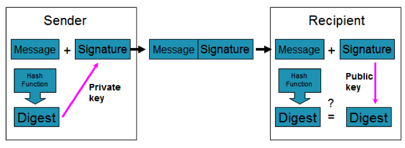
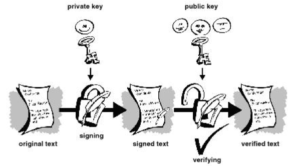
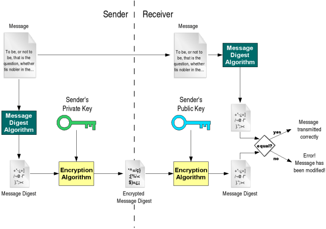
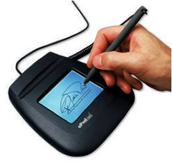

6. Digital Signatures
การทำธุรกรรมอิเล็คทรอนิกส์จำเป็นที่จะต้องมีการยืนยันเอกสารหรือข้อมูลที่ส่งว่าถูกส่งมาจากผู้ส่งจริง เพื่อการป้องกันการปฏิเสธความรับผิดชอบ (Non-repudiation) และเป็นการพิสูจน์ทราบตัวตน (Authentication) จากที่เราได้ศึกษาไปในหัวข้อ Asymmetric Key Cryptography ทำให้ทราบว่าการเข้ารหัสข้อมูลด้วย Private Key สามารถยืนยันผู้ส่งได้เช่นผู้ใช้ A เข้ารหัสข้อมูลด้วย Private Key ของตนเองแล้วส่งข้อมูลไปให้ผู้ใช้ B และผู้ใช้ C จากนั้นผู้ใช้ B และผู้ใช้ C ก็ถอดรหัสโดยใช้ Public Key ของผู้ใช้ A ได้ เป็นการยืนยันได้ว่าข้อมูลมาจากผู้ใช้ A จริง เพราะเป็นคนเดียวที่มี Private Key ของผู้ใช้ A
ในการส่งข้อมูลที่ "ไม่เป็นความลับ" และเป็นข้อมูลมีขนาดใหญ่ หากต้องการที่จะยืนยันผู้ส่งด้วยวิธีการข้างต้นเราจะต้องทำการเข้ารหัสข้อมูลทั้งหมดด้วย Private Key ของผู้ส่ง (เพื่อเป็นการยืนยันตัวตนผู้ส่ง) นั้นจะข้อเสียคือจะต้องมีการเข้ารหัสข้อมูลขนาดใหญ่ทั้งหมด และผู้รับจะต้องทำการถอดรหัสข้อมูลทั้งหมดเช่นกัน ซึ่งทำให้เปลือง CPU และเปลืองเวลาในการประมวลผล แต่อย่างไรก็ตามเราสามารถที่จะประยุกต์กรรมวิธีข้างต้นให้ใช้ CPU และเปลืองเวลาน้อยลงได้โดยใช้ฟังก์ชั่น Hash
หลักการทำงานของลายเซ็นดิจิตอล


ประโยชน์ของลายเซ็นดิจิตอล (Digital Signatures)
- ใช้เพื่อเพิ่มความปลอดภัย ช่วยยืนยันตัวจดหมายว่าส่งมาจากผู้ส่งนั้นจริง
- ใช้หลักการในการเปลี่ยนข้อความทั้งหมดให้เหลือเพียงข้อความสั้น ๆ เรียกว่า“Message digest” ซึ่งจะถูกสร้างขึ้นด้วยกระบวนการเข้ารหัสยอดนิยมที่เรียกว่า One-way hash function
- จะใช้ message digest นี้ในการเข้ารหัสเพื่อเป็นลายเซ็นดิจิตอล(Digital Signature) โดยจะแจก Public key ไปยังผู้ที่ต้องการติดต่อ
ตัวอย่างการตรวจสอบลายเซ็นดิจิตอล
- ทิมต้องการส่งข้อความไปให้แอน ทิมก็นำข้อความที่ต้องการส่งมาคำนวณหา message digest ของข้อความ
- ทิมนำ message digest ที่ได้มาเข้ารหัสด้วยคีย์ส่วนตัวของทิม จะได้ผลลัพธ์ออกมาเป็นลายเซ็นดิจิตอล
- ทิมส่งข้อความต้นฉบับที่ไม่ได้เข้ารหัส พร้อมกับลายเซ็นดิจิตอลของตนเองไปให้แอน
- แอนได้รับข้อความก็จะนำคีย์สาธารณะของทิมมาถอดรหัสลายเซ็นดิจิตอลของทิม ได้ออกมาเป็น message digest ที่ทิมคำนวณไว้
- แอนมั่นใจได้ว่าข้อความที่ได้รับนั้นส่งมาโดยทิมจริง ๆ เพราะถอดรหัสลายเซ็นของทิมได้
- แอนใช้แฮชฟังก์ชันตัวเดียวกับที่ทิมใช้ (ต้องตกลงกันไว้ก่อน) มาคำนวณหา message digest จากข้อความที่ทิมส่งมาเพื่อเปรียบเทียบกัน
- ถ้า message digest ที่ได้จากการคำนวณทั้งสองตรงกัน แสดงว่าลายเซ็นดิจิตอลเป็นของทิมจริง และไม่มีผู้ใดมาเปลี่ยนแปลงแก้ไขมันแต่อย่างใดก่อนจะมาถึงแอน

สรุปเกี่ยวกับขั้นตอนของ Digital Signatures ได้ดังนี้
1. นำข้อมูลต้นฉบับ (ซึ่งอาจจะมีขนาดใหญ่) มาทำการ Hash (ด้วยแฮชชิ่งอัลกอริทึมอย่างใดอย่างหนึ่งเช่น MD5 หรือ SHA1) ได้เป็นข้อมูลก้อนเล็ก ๆ เรียกว่า Message Digest
2 .นำ Message Digest มาเข้ารหัสด้วย Private Key ของผู้ส่ง ได้เป็น "Digital Signatures"
3 .ส่งข้อมูลต้นฉบับ (อาจจะมีขนาดใหญ่) ซึ่งอยู่ในรูปของ Plain Text ไปให้ผู้รับ โดยทำการแนบ Digital Signatures ไปด้วย (มีการส่งข้อมูลไปยังผู้รับ 2 ชิ้นคือ (a) ข้อมูลต้นฉบับ และ (b) Digital Signatures)
4 .ผู้รับเมื่อได้รับข้อมูลแล้วก็ทำการตรวจสอบข้อมูลที่ได้รับ โดยการนำ Digital Signatures มาถอดรหัสโดยใช้ Public Key ของผู้ส่ง ได้เป็น Message Digest
5 .ผู้รับนำข้อมูลต้นฉบับมาทำการ Hash (ด้วยอัลกอริทึมเดียวกันกับที่ผู้ส่งใช้เช่น MD5 หรือ SHA1) ได้เป็น Message Digest อีกอันหนึ่ง
6 .นำ Message Digest ทั้งสองมาเปรียบเทียบกัน หากมีค่าเหมือนกันก็แสดงว่าข้อมูลต้นฉบับถูกส่งมาจากผู้ส่งจริงและไม่มีการเปลี่ยนแปลงข้อมูลระหว่างทาง
ข้อสังเกต
- สิ่งที่ทำให้มั่นใจได้ว่าข้อมูลถูกส่งมาจากผู้ส่งจริงคือการที่ผู้รับสามารถถอด Digital Signatures โดยใช้ Public Key ของผู้ส่งได้ แสดงว่าข้อมูลนั้นถูกเข้ารหัสโดยใช้ Private Key ของผู้ส่งจริง ซึ่งผู้ที่มี Key นี้มีอยู่คนเดียวเท่านั้นคือผู้ส่ง
- สิ่งที่ทำให้มั่นใจได้ว่าข้อมูลไม่ถูกเปลี่ยนแปลงระหว่างทางคือ การเปรียบเทียบค่า Hash ทั้งสองแล้วพบว่าตรงกัน โดยค่าแฮชตัวหนึ่งมาจากการนำข้อมูล Plain Text ที่ได้รับมาแฮช ส่วนค่าแฮชอีกตัวหนึ่งมาจากการถอดรหัส Digital Signatures ที่สร้างจากข้อมูลต้นฉบับ ดังนั้นหากทั้งสองนี้ตรงกันก็แสดงว่ามาจากข้อมูลเดียวกัน
เราสามารถที่จะส่ง Data, Digital Signature, และ Public Key ไปพร้อมกันได้ โดยส่ง Public Key ในรูปแบบของ Certificate (Public Key ที่ถูกรับรองโดย CA แล้ว) นอกจากนั้นการส่งข้อมูลลับและลงลายเซ็นดิจิตอลก็สามารถทำได้เช่นกัน โดยการนำขั้นตอนของ Digital Signatures ทั้ง 6 ขั้นตอนมา Apply โดยแก้ไขขั้นตอนที่ 3 และ 5 ดังนี้
ขั้นตอนที่ 3 (ปรับใหม่) นำข้อมูลต้นฉบับ (อาจจะมีขนาดใหญ่) ซึ่งเป็น Plain Text มาเข้ารหัสด้วย Public Key ของผู้รับ ให้กลายเป็น Cipher Text จากนั้นจึงส่ง Cipher Text ไปให้ผู้รับ โดยทำการแนบ Digital Signatures ไปด้วย (มีการส่งข้อมูลไปยังผู้รับ 2 ชิ้นคือ (a) ข้อมูลที่เป็น Cipher Text และ (b) Digital Signatures)
ขั้นตอน 5 (ปรับใหม่) ผู้รับนำข้อมูลที่เป็น Cipher Text มาถอดรหัสด้วย Pivate Key ของตนเอง ได้เป็นข้อมูลต้นฉบับแบบ Plain Text จากนั้นมาทำการ Hash (ด้วยอัลกอริทึมเดียวกันกับที่ผู้ส่งใช้เช่น MD5 หรือ SHA1) ได้เป็น Message Digest อีกอันหนึ่ง (เมื่อนำขั้นตอนที่ 3 และ 5 ที่ปรับใหม่ไปใช้ร่วมกับข้อที่ 1,2,4,6 เดิมก็จะสามารถส่งข้อมูลลับพร้อมลงลายเซ็นดิจิตอลได้)
หลายคนเข้าใจผิดคิดว่าลายเซ็นดิจิตอลหมายถึงสิ่งต่อไปนี้
- การเซ็นชื่อใส่กระดาษแล้วสแกนเก็บไว้ในรูปภาพแบบดิจิตอล
- การเซ็นชื่อลงบนอุปกรณ์อิเล็กทรอนิกส์เพื่อเก็บลายเซ็นไว้ในรูปแบบดิจิตอล
